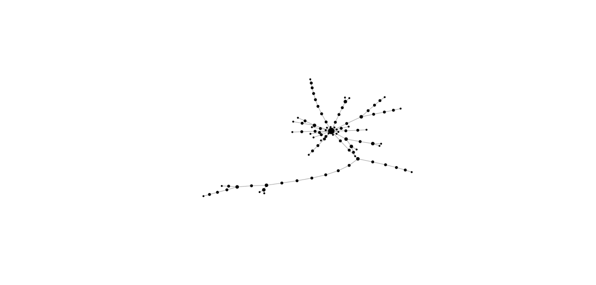
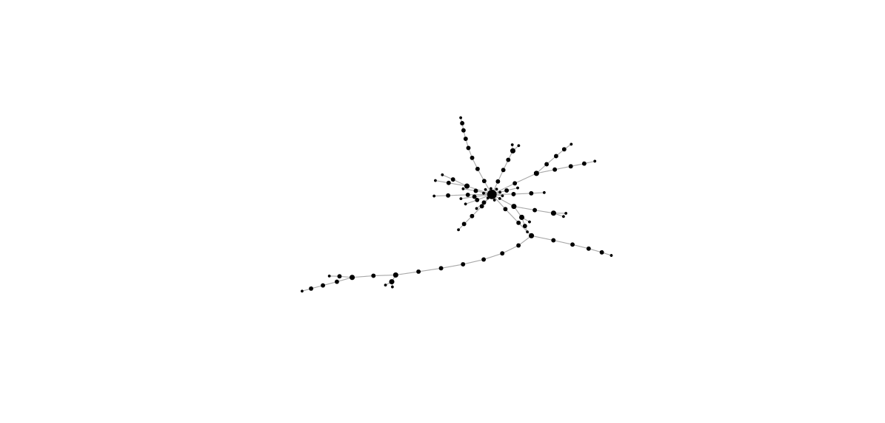
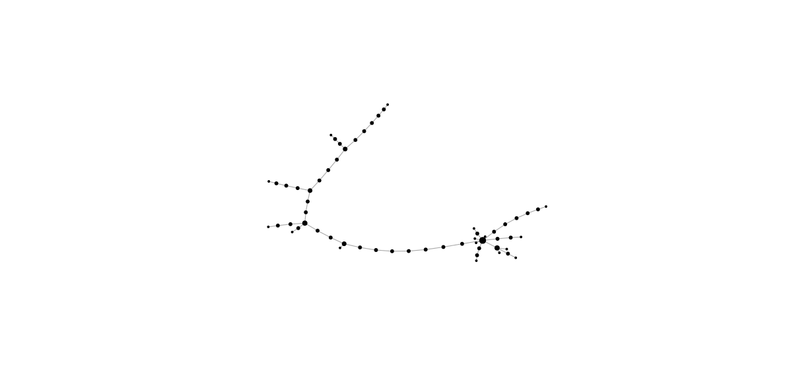
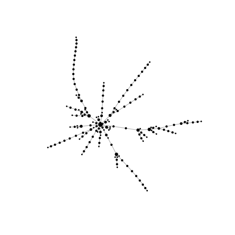
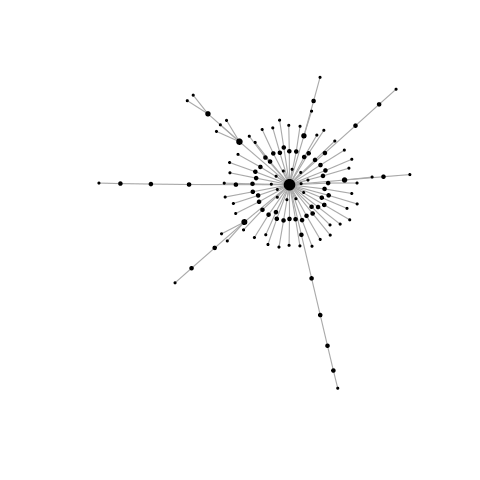
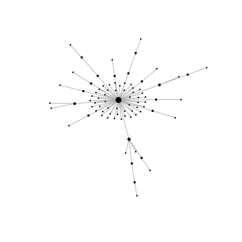
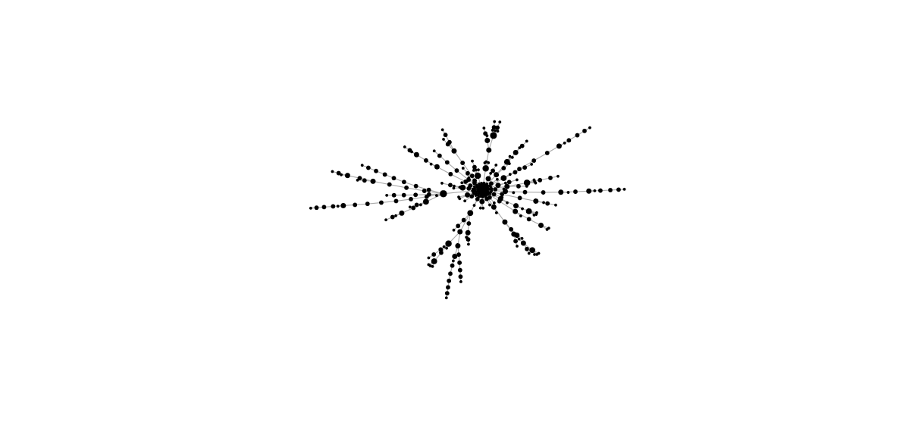
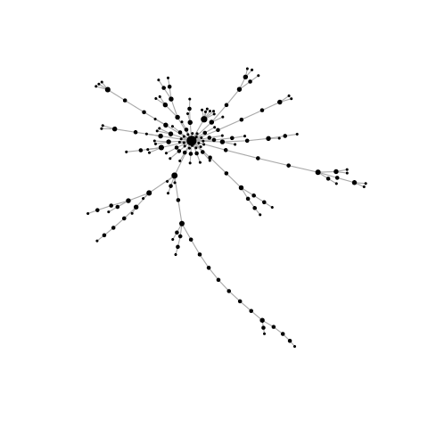

Alberto Lumbreras [PhD Student in Computer Science]
Podemitas motifs
Posted on January 14, 2015In this post, I will cluster Podemos forum users according to the graphs around their posts. The idea is to find which groups of users tend to participate (more than the average) in cascades, which ones tend to participate (more than the average) in stars, and son on.
As in the previous post, I will use the threads written on January 2015 on the Reddit subforum of Podemos. The podemos forum (a.k.a subreddit) contains 995 discussion threads that started on January. These threads contain a total of 12912 posts written by 1218 users.
Motifs in discussion trees
A very natural to represent a conversation thread is a tree where vertices represent posts and edges represent replies from some post to another. Let us see it:

 

  
  
Here I call motif to the graph formed by the neighborhoos of a post